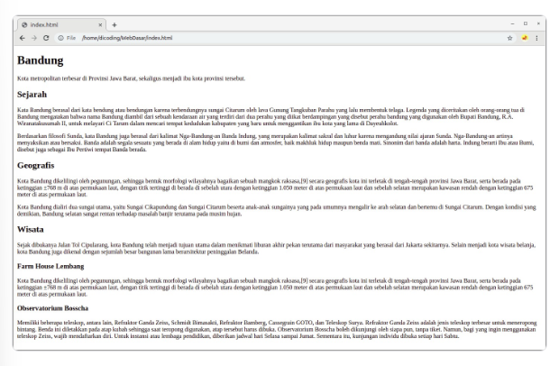
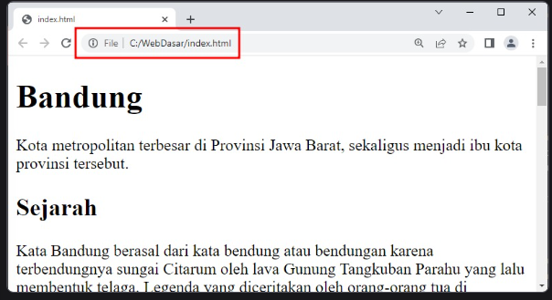
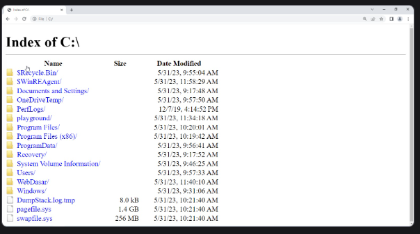

Apakah Anda masih ingat HTML? Ia merupakan satu-satunya bahasa markup untuk membangun struktur halaman website. Sebagaimana telah dipelajari sebelumnya, HTML dianalogikan seperti kerangka hewan yang menentukan bentuk tubuhnya. Hal ini menjadikan setiap hewan memiliki bentuk yang bermacam-macam.
Nah, pada modul ini, kita akan berkenalan dengan HTML terlebih dahulu. Namun, tenang saja. Istilah “berkenalan” mungkin terdengar seperti Anda tidak akan mendapatkan pembahasan HTML secara dalam. Kita akan membagi sesi pembahasan HTML menjadi dua, yaitu Pengenalan HTML (modul yang sedang dipijak) dan Pendalaman HTML.
Pada akhir modul, kita akan membuat halaman website seperti gambar berikut.
Pada materi selanjutnya, sebelum berkenalan dengan HTML, kita akan sedikit pemanasan terlebih dahulu. Nah, Anda sudah tidak sabar untuk memasuki langkah awal menjadi web developer, kan? Kami yakin, antusias Anda untuk menjadi web developer andal sangat tinggi.
Tunggu apa lagi? Yuk, langsung menuju ke materi berikutnya.
Dalam membuat halaman web, sebetulnya kita perlu menyiapkan satu hal utama dan yang paling utama, yaitu folder proyek. Ini biasa disebut dengan root project. Disadari atau tidak, sebetulnya kita telah menyiapkan hal tersebut yang dinamai “WebDasar”. Nah, folder inilah tempat kita bekerja membangun halaman web.
Folder proyek ini sebetulnya merupakan folder biasa. Folder proyek juga biasa disebut dengan root project directory karena di dalam folder inilah kita menyimpan seluruh berkas yang dibutuhkan untuk membuat website, salah satunya berkas HTML.
Penamaan berkas ini dibagi menjadi dua bagian, yaitu nama dan formatnya. Kita bahas terlebih dahulu mengenai formatnya. Format yang digunakan adalah .html (dibaca: dot html). Ini merupakan format atau ekstensi berkas yang tepat untuk membuat halaman web.
tulah alasan mengenai format berkas yang digunakan. Namun, bagaimana dengan hal yang kedua–nama berkas, yaitu index? Kita menggunakan “index” karena ia merupakan nama berkas default dari web server jika tidak ada berkas spesifik pada URL. Berkas tersebut akan dikirimkan dan ditampilkan pada browser oleh web server.
Berikut adalah perbedaan jika kita menampilkan halaman web antara index.html dengan lainnya–misalnya example.com.
Kita sudah mencoba untuk menjalankan dokumen HTML di browser yang telah dibuat sebelumnya. Namun, apakah Anda merasa ada yang berbeda dengan membuka website pada umumnya?
Umumnya, kita membuka website dengan menyebutkan nama domainnya. Contohnya dicoding.com. Namun, dalam praktik ini, kita menggunakan file sebagai skemanya untuk membaca file system dari komputer. Silakan Anda sisakan menjadi “C:/” saja pada URL di atas. Hasilnya seharusnya akan seperti berikut.